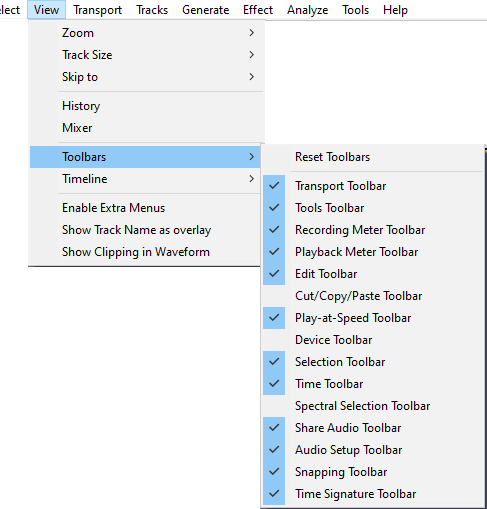

View Menu: Toolbars
From Audacity Development Manual
Toolbars provide quick access to many functions in Audacity. In some cases the functions provided by a toolbar are available only through that toolbar.
- The following toolbars are not enabled by default: Cut/Copy/Paste Toolbar, Device Toolbar and Spectral Selection Toolbar.
- If your desired toolbar is not visible, choose and click to put a checkmark by the toolbar you wish to enable.
| For details of the toolbars and what they do, see Toolbars Overview. |
- 
This menu shows and hides toolbars.
- Click on the check marks to hide or show a toolbar.
- Click on 'Reset Toolbars' to get back to the default selection and position of toolbars.
Toolbars - upper and lower dock areas
There are two dock areas for toolbars in Audacity. By default, most of the Audacity toolbars are in the upper dock, with only the Selection Toolbar in the lower dock.
Toolbars can be arranged and resized within either of the two docks, or floated free of the docks.
Upper Toolbar dock area

The Cut/Copy/Paste Toolbar though shown here is not enabled by default.
Lower Toolbar dock area

Reset Toolbars
Using positions all toolbars in default location and size as they were when Audacity was first installed.
Note that does not reset the parameter settings in the various toolbars.
|